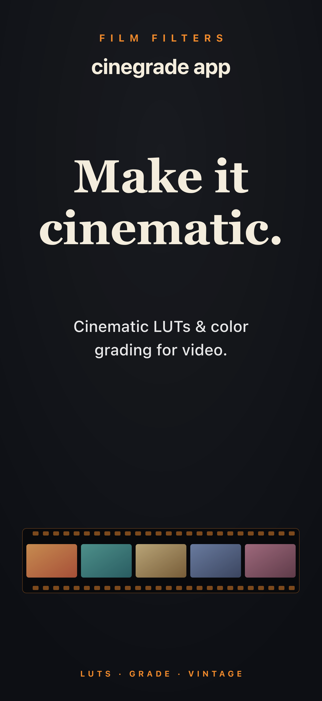
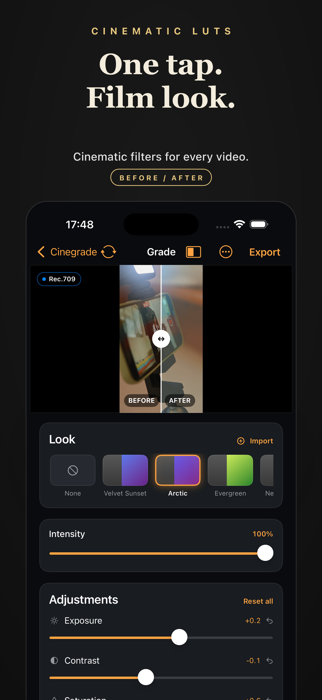
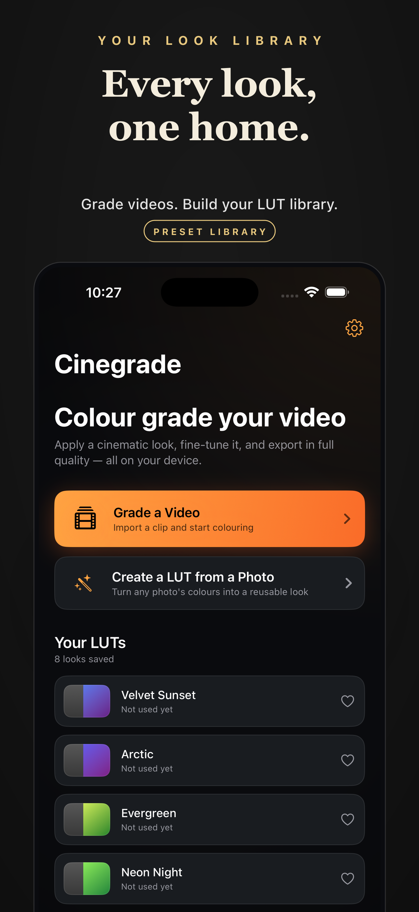
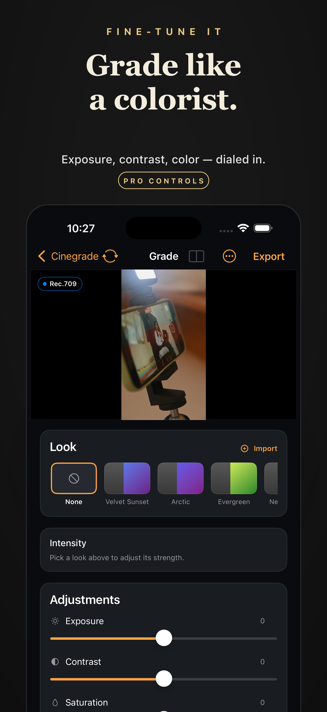

Cinematic LUTs & Color Grade
Give your videos and photos the true film look. Professional LUTs and color grading — no editing skills needed.
Why Cinegrade
Warm Kodak-style tones, teal & orange, faded retro — looks inspired by classic analog film stocks.
Professional LUTs crafted by colorists. Apply a cinematic grade in a single tap, no experience required.
Dial in exposure, contrast, saturation, temperature and grain to push every look further.
Works on video and photo alike. Export at full resolution with zero quality loss — keep your feed consistent.
App Screenshots




Made for Creators
Whether you cut vlogs, reels, travel films or short movies, Cinegrade gives your footage the color identity big productions pay thousands for.
No timelines, no learning curve. Import, grade, share. Pick a look, adjust the intensity, export — done in seconds.
Privacy
Cinegrade processes everything on your device. Your videos and photos never leave your iPhone — no account required, nothing uploaded. Full details are in our Privacy Policy.
Support
Yes. Apply any LUT or color grade to video clips and still photos — your feed stays visually consistent across all formats.
No. Cinegrade exports at full resolution with no quality loss, regardless of which look you apply.
Not at all. One tap applies a professional LUT, and simple sliders let you fine-tune the look to taste. The app is designed for everyone.
Cinegrade runs on any iPhone or iPad running a current version of iOS. Check the App Store listing for the minimum OS version.